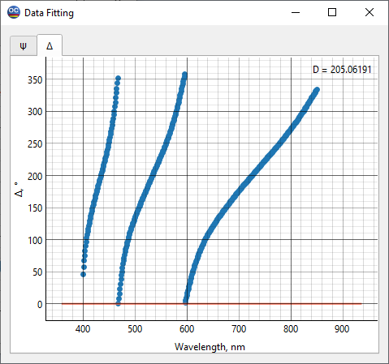
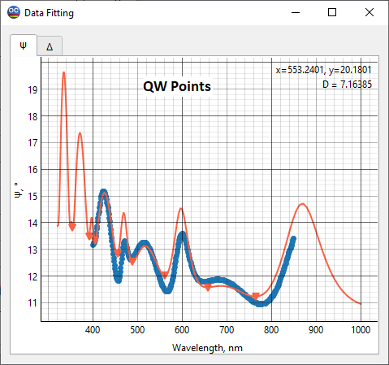

LEC24C5 – Characterization using spectral ellipsometric data
Note: The main theoretical facts concerning optical characterization using spectral ellipsometric data are presented in the text below. For a more detailed introduction to the basics of characterization theory, we recommend the book by A. Tikhonravov, Optical coatings: design, characterization, monitoring, SPIE Press, 2024
The main purpose of this example is to demonstrate the application of spectroscopic ellipsometry to the determination of optical parameters of thin films and to discuss the advantages and disadvantages of this type of optical characterization compared to the more widely used spectrophotometric characterization.
In the File -> Project menu of OptiChar, open the directory LEC24C5. The datafiles needed to run this exercise are already loaded into RAM. These are the substrate Fused silica and the measurement datafile Nb2O5 ELL. 65 DEG. The downloaded measurement datafile contains Psi and Delta ellipsometric data measured in the 400-850 nm wavelength range at 65-degrees incidence.
Open the Data Fitting option from the View menu. The dots in the Psi and Delta tabs of the Data Fitting window show the measured ellipsometric data, and the solid curves represent the ellipsometric angles for the uncoated fused silica substrate.

The following theoretical considerations are important for characterization using spectral ellipsometric data. In the case of low-absorbing dielectric materials, the extinction coefficient (the imaginary part of the complex refractive index) has little effect on the film reflection coefficient. Both ellipsometric angles are expressed in terms of the reflection coefficients for the s- and p-polarized light. For this reason, low absorption has only a minor effect on both ellipsometric angles. Therefore, there is a little point in trying to determine extinction coefficients using ellipsometric data.
Go to the Layer Characterization option in the Characterization menu and select the Normal Dispersion model for the refractive index and the Non-absorbing model for the extinction coefficient as per the note above. Click OK to start the characterization procedure. The results are displayed in the Data Fitting and Layer Plots windows. Check the fit of the model data to the measured data in the Psi tab of the Data Fitting window.
Systematic deviations of the model Psi angle from the measured data are observed. It is worth keeping in mind that systematic deviations of the model spectral characteristics from the measured data usually indicate deficiencies in the thin film model.
As with spectral photometric data, there are important theoretical results for spectral ellipsometric that help to understand which thin film model to consider. In 1990, Chuck Carniglia introduced two types of wavelength points: half-wave (HW) and quarter-wave (QW) points. He made the following conclusions about the effect of thin film inhomogeneity on ellipsometric data:
Ellipsometric angle Ψ is most sensitive to bulk inhomogeneity at HW points.
Ellipsometric angle Ψ is insensitive to bulk inhomogeneity at QW points.
Ellipsometric angle Δ is insensitive to bulk inhomogeneity at HW and QW points.
We can mark these points using the HW, QW, IW Points section of the Options… menu item in the Characterization menu.
Let us check the HW points first, and then the QW points. We see that, as Chuck Carniglia predicted, the greatest discrepancy between the model and measured data is at the HW points, while at the QW points there is a good agreement between the two. The obvious conclusion is that the film under study is inhomogeneous.

Let us move on to the Layer Refinement option of the Characterization menu and include the bulk inhomogeneity in the thin film model. To do this, simply check the Bulk checkbox in the lower left part of the window. The bulk inhomogeneity will be searched for within the so-called Schroeder’s model, which assumes a liner change (increase or decrease) in the refractive index of the film from its rear boundary to the front boundary.
Click OK to start the refinement procedure. The Data Fitting window shows a much better match of the measured data than before. There is excellent agreement between the model and measured data at both the HW and QW points. But there is still a noticeable discrepancy at the wavelengths just between these points.

Recall that systematic deviations of the model data from the measured data may indicate the imperfection of the thin film model used. Again, it is necessary to involve another theoretical result related to the effect of the film surface roughness on the ellipsometric angles. Tikhonravov et. al. showed that the presence of a surface overlayer on a top of a thin film most noticeably affects the ellipsometric angle Ψ at the IW points located just between the HW and QW points. This is exactly what we observe in the Data Fitting window (we can mark the IW points using the HW, QW, IW Points section of the Options… menu item in the Characterization menu). Thus, it is advisable to add another parameter to the thin film model, namely the thickness of the overlayer representing the surface roughness. This overlayer has an intermediate refractive index between the film index and ambient medium index.
Return to the Layer Refinement option of the Characterization menu and check the Surface checkbox at the bottom of the setup window.
Click OK to run the refinement procedure. The Data Fitting window now shows an excellent match between the model and measured Psi data across the entire measurement spectrum. The found degree of inhomogeneity and the surface overlayer thickness can be seen in the General Information window.
The refractive index wavelength plot is shown in the Layer Plots window. The results are stored in the Layer Material database under the name NbO5 from 65-degree data.